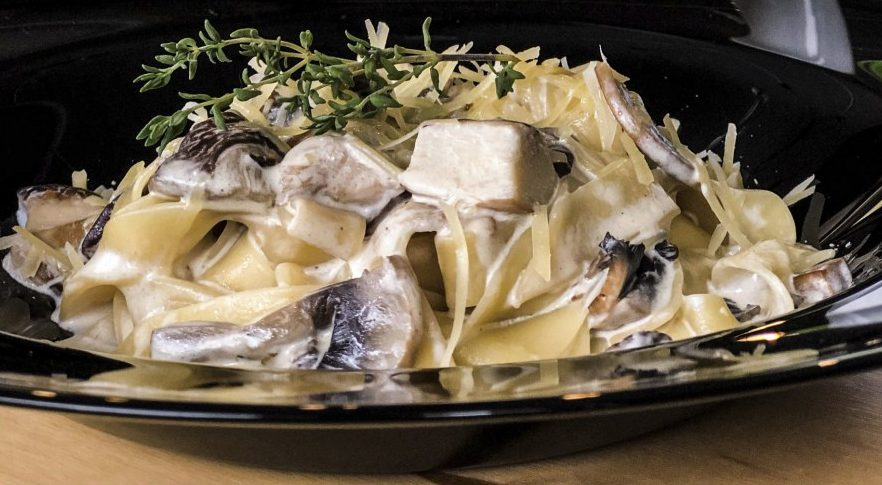
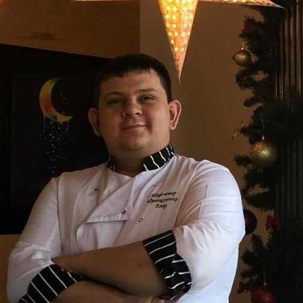

Найдите своё место в GeLatte
Для встреч с друзьями, долгих разговоров и времени для себя. Выберите, что хочется сегодня, и проведите этот момент по-своему.
- Адрес
- Новосибирск, ул. Ядринцевская, 72
- Телефон
- +7 (383) 21-28-748


Больше, чем встреча за столом
Иногда достаточно собраться вместе, чтобы обычный день стал особенным. Мы хотим, чтобы GeLatte был местом, куда приходят за такими моментами.
Посмотреть фото
Для встреч, которые хочется повторить
Дни рождения, свадьбы, корпоративы и другие мероприятия. Дату и условия вы обсуждаете с администратором: это запрос, а не подтверждённая бронь.
Зал №1
минимальная сумма закрытия30 000 ₽Зал №2
минимальная сумма закрытия45 000 ₽Сервисный сбор 10% добавляется сверху и не входит в минимальную сумму.
Интерьер и подача

Команда

ЕгорШеф-поварАнтонУправляющий
АльбинаПовар
КсенияБариста
- Адрес
- Новосибирск, ул. Ядринцевская, 72
- Почта
- gelatte-cafe@mail.ru
- Визит
- Время визита уточните по телефону